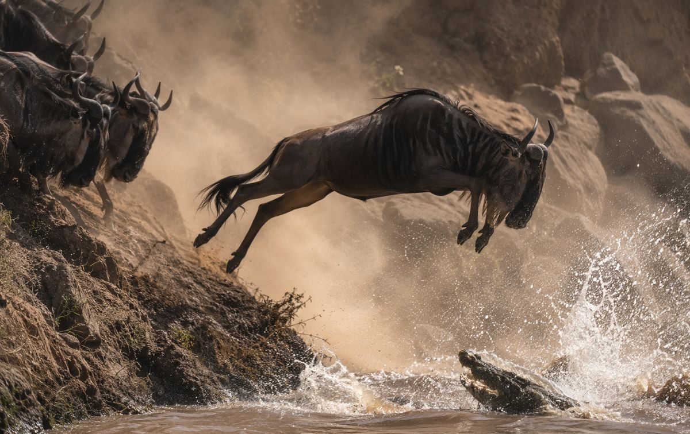
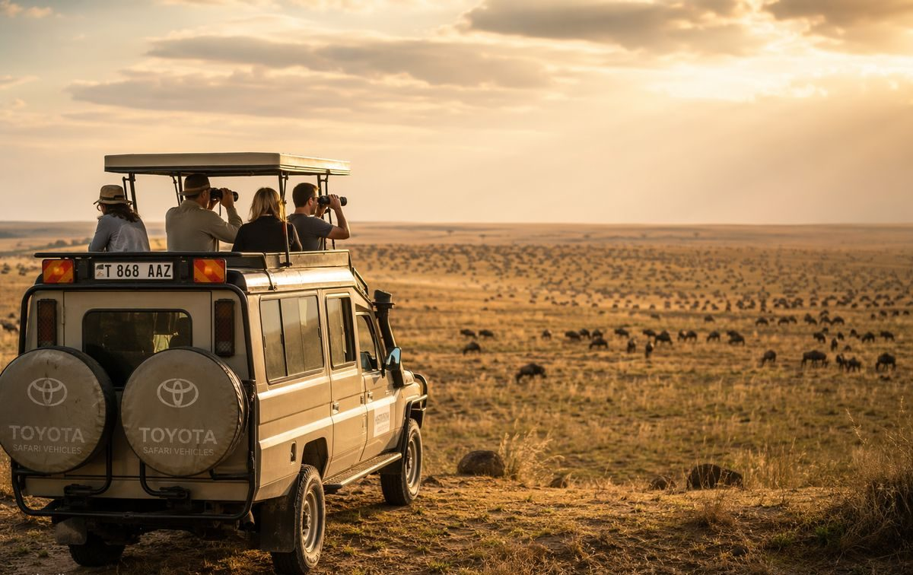
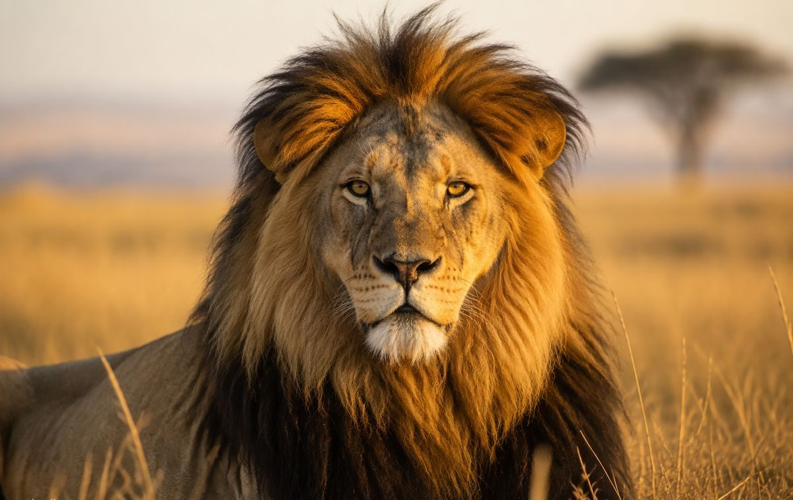
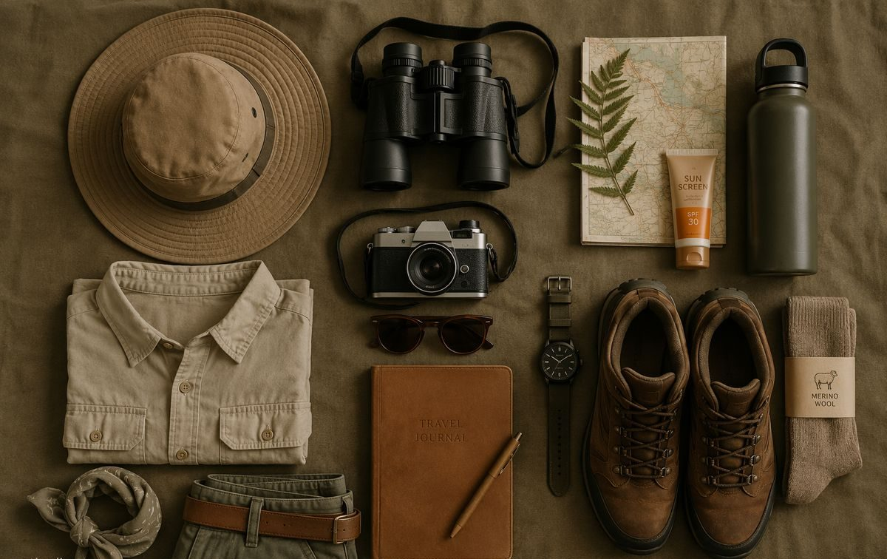
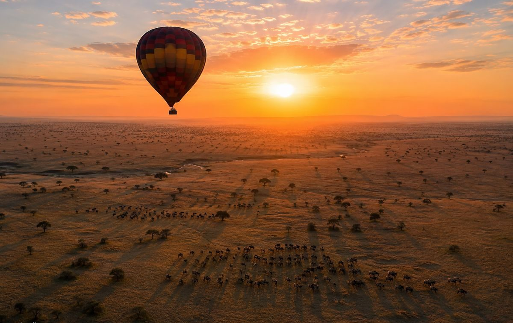

Travel Guide8 min read
Best Time to Visit East Africa for a Safari: A Month-by-Month Guide

"When should we come?" is the first question nearly every guest asks us — and the honest answer is that East Africa delivers extraordinary wildlife viewing twelve months a year. The better question is: what do you want to see, and how do you feel about crowds and price?
June to October — The Dry Season (Peak)
This is the classic safari window. Vegetation thins out, animals concentrate around rivers and waterholes, and the Great Migration pushes into Kenya's Masai Mara between July and October, culminating in the dramatic Mara River crossings. Days are warm, nights cool, and rain is rare. Expect the highest lodge rates of the year and book 6–9 months ahead for the Mara's best camps.
January to March — Calving Season (Our Insider Pick)
In Tanzania's southern Serengeti and Ndutu plains, roughly half a million wildebeest calves are born within a few weeks — and where calves gather, predators follow. It is arguably the most action-packed game viewing of the year, with lush green landscapes that photograph beautifully. Rates sit below the July–October peak.
April to May — The Long Rains (The Value Secret)
Yes, it rains — usually in dramatic afternoon bursts rather than all day. In exchange you get emerald landscapes, newborn animals, virtually empty parks and lodge discounts of 20–40%. For photographers and repeat safari-goers, the green season is a genuine gem.
November to December — The Short Rains
Brief showers refresh the plains, migratory birds arrive in their thousands, and the herds begin moving south through the Serengeti. A lovely, quiet shoulder season with moderate prices.
- Great Migration river crossings: July–October (Masai Mara & northern Serengeti)
- Calving & predator action: January–March (southern Serengeti / Ndutu)
- Best value & fewest crowds: April–June and November
- Kilimanjaro views in Amboseli: clearest at dawn, driest June–October
Whichever window fits your calendar, we will route your itinerary to where the wildlife is at that exact time of year — that is the advantage of travelling with a local operator.
Not sure which month fits your plans?
Send us your dates — we'll tell you honestly what to expect and where to go.
Destinations7 min read
Kenya vs Tanzania: Which Safari Destination Is Right for You?

We operate in both countries, so we can afford to be honest: you cannot make a bad choice. But the two neighbours do offer genuinely different safari experiences, and the right answer depends on your budget, your time and your travel style.
Kenya — Compact, Accessible, Electric
Kenya's parks sit closer together and closer to Nairobi, so you spend less time in transit and more time on game drives. The Masai Mara offers arguably the densest big-cat viewing on the continent, Amboseli delivers elephants against Kilimanjaro, and the Laikipia plateau adds rhino conservation and walking safaris. Kenya also tends to be friendlier to tighter budgets, with a wider range of mid-range lodges and shorter viable itineraries (3–6 days work well).
Tanzania — Vast, Wild, Cinematic
The Serengeti is roughly ten times the size of the Mara, and it feels like it — horizons that never end, and the sense of true wilderness. Ngorongoro Crater is a natural wonder that guarantees Big Five sightings in a single day, and Tarangire's baobab-dotted elephant country remains wonderfully underrated. Park fees are higher and distances longer, so Tanzania rewards travellers with 5+ days and a slightly larger budget.
The honest comparison
- Budget: Kenya is generally 15–25% cheaper for a comparable itinerary
- Migration river crossings: both countries (Jul–Oct) — Mara more compact, Serengeti more remote
- Crowds: the Mara gets busier in peak season; the Serengeti always has space
- Beach add-on: Tanzania pairs seamlessly with Zanzibar; Kenya with Diani or Lamu
- Short trip (3–5 days): Kenya wins · Long trip (7+ days): Tanzania shines
Our favourite answer? Do both. Our 10-day Kenya–Tanzania Grand Safari combines the Mara, Serengeti, Ngorongoro and Amboseli in one continuous journey — the definitive East African experience.
Torn between the two? Let us design both options.
We'll prepare side-by-side quotations for Kenya, Tanzania or a combined route.
Wildlife6 min read
The Big Five: Where and How to See Them in East Africa

Lion, leopard, elephant, buffalo and rhino — the "Big Five" were named by hunters for the five most difficult animals to track on foot. Today they are the five most thrilling to photograph, and East Africa remains the best place on earth to see all of them in a single trip.
Lion — The Easy One (With the Right Guide)
The Masai Mara and Serengeti hold Africa's healthiest lion populations. Our guides track them by reading the bush: alarm calls from baboons, vultures circling, the direction herbivores are staring. Dawn and dusk drives are when prides are active and the light is golden.
Leopard — The Reward for Patience
Elusive, solitary and breathtaking. The Mara's riverine forests along the Talek and Mara rivers, and the Seronera Valley in the central Serengeti, are our most reliable leopard territories. Samburu is another stronghold — we've had guests spot three in one afternoon.
Elephant — Guaranteed Giants
Amboseli is the elephant capital of Africa, with some of the continent's largest tuskers photographed against Kilimanjaro. Tarangire's dry-season herds can number in the hundreds along the river.
Buffalo & Rhino — The Unsung Two
Buffalo are everywhere — massive, moody and magnificent in herds. Rhino require more planning: Ngorongoro Crater offers East Africa's most reliable black rhino sightings, while Kenya's Ol Pejeta Conservancy protects over 150 rhinos including the last two northern white rhinos on the planet. Lake Nakuru is another dependable rhino park.
- Fastest Big Five tick: Ngorongoro Crater — possible in a single day
- Best leopard odds: Masai Mara & Seronera Valley
- Best elephant photography: Amboseli at sunrise
- Best rhino conservation visit: Ol Pejeta, Kenya
Tell us which animals top your list, and we'll weight your route and the number of days in each park accordingly.
Dreaming of the Big Five?
We'll build an itinerary that maximises your chances in the time you have.
Packing Tips6 min read
What to Pack for an African Safari: The Complete Checklist

After twelve years of watching what guests use — and what stays at the bottom of the bag — here is the checklist we send every Sorola traveller before departure.
Clothing: Think Layers, Think Neutral
- Neutral colours (khaki, olive, beige, brown) — avoid bright colours, dark blue and black (they attract tsetse flies)
- 2–3 lightweight long-sleeved shirts and 2 pairs of convertible trousers
- A warm fleece or light jacket — early morning game drives are genuinely cold, even on the equator
- A wide-brimmed hat, sunglasses and a light scarf or buff for dust
- Comfortable closed walking shoes; sandals for the lodge
- Swimwear — most lodges have pools you'll be glad of at midday
Gear That Earns Its Place
- Binoculars — one pair per person if possible; sharing means missing moments
- Camera with a zoom of at least 200mm, plus spare batteries and memory cards
- Power bank and a universal adapter (Kenya & Tanzania use the UK-style Type G plug, 240V)
- Soft-sided duffel bag — hard suitcases don't fit well in safari vehicles (15kg limit on bush flights)
- Reusable water bottle, sunscreen SPF 50, insect repellent and personal medication
Documents & Money
- Passport valid 6+ months beyond travel, with your e-visa or eTA arranged in advance
- Travel insurance with medical evacuation cover (essential, and we will ask for it)
- Yellow fever certificate if arriving from an endemic country
- Some USD cash (post-2009 notes) for tips and souvenirs; cards are accepted at most lodges
What to leave at home: drones (banned in national parks without special permits), camouflage clothing, plastic bags (illegal in Kenya) and expensive jewellery.
Booked or still planning?
Every Sorola guest receives our full pre-departure pack with checklists, tipping guides and park rules.
Experiences5 min read
Hot Air Balloon Safaris Over the Mara: Is It Worth It?

At around $450–500 per person on top of your safari, a balloon flight over the Masai Mara is one of the biggest single add-ons we sell — and one of the most asked about. Here is our honest take after sending thousands of guests up at dawn.
What the Morning Looks Like
You are collected from your lodge in the dark, around 5am, and driven to the launch site where the burners roar the balloon upright as the sky turns pink. You lift off with the sunrise and drift for roughly an hour — over rivers where hippos grunt, herds that scatter in slow waves beneath the shadow of the balloon, and (if fortune smiles) predators returning from the night's hunt. The flight ends with a champagne bush breakfast served on the open plains, complete with white tablecloths. It is unabashedly romantic.
What You See That You Can't From a Vehicle
Perspective. From 300 metres up, the Mara stops being a series of sightings and becomes a living system — you see how the herds flow along the rivers, where the woodlands hide, the sheer scale of the migration when it's in residence. Photographers love the soft dawn light and the long animal shadows.
Our Verdict
- Worth it for: honeymooners, photographers, special occasions, migration season (Jul–Oct)
- Consider skipping if: you're on a tight budget (that money buys an extra safari day), or you strongly dislike heights
- Good to know: flights are weather-dependent; children under ~7 usually can't fly; book ahead in peak season
Roughly nine out of ten guests tell us it was the highlight of their trip. If the budget allows, do it once in your life — and the Mara is the place to do it.
Want a balloon flight added to your safari?
We arrange balloon safaris in the Masai Mara and Serengeti as part of any itinerary.